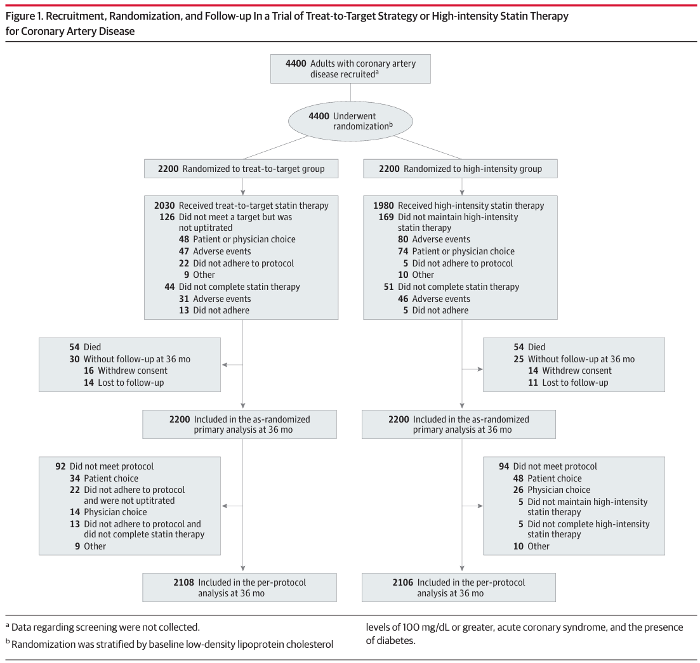
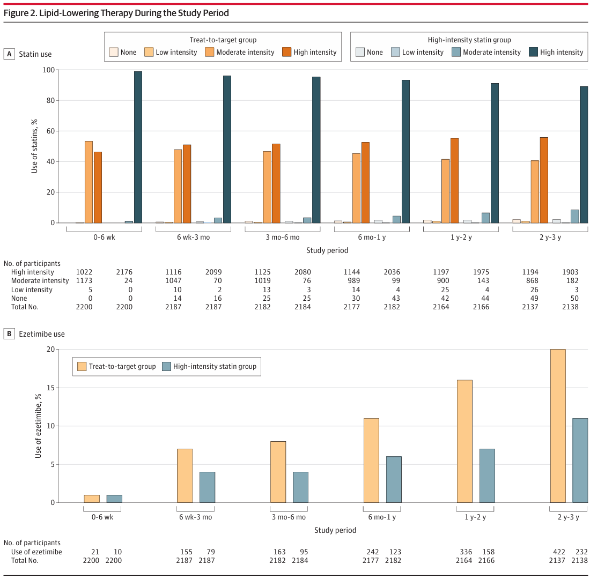
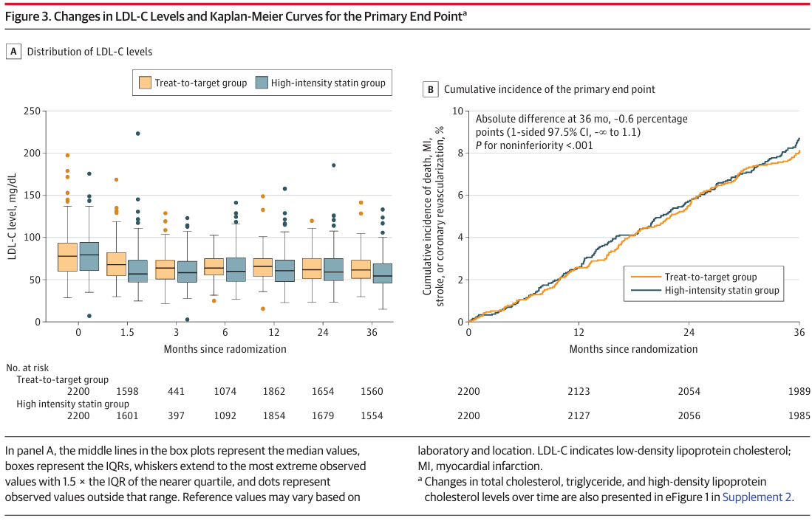
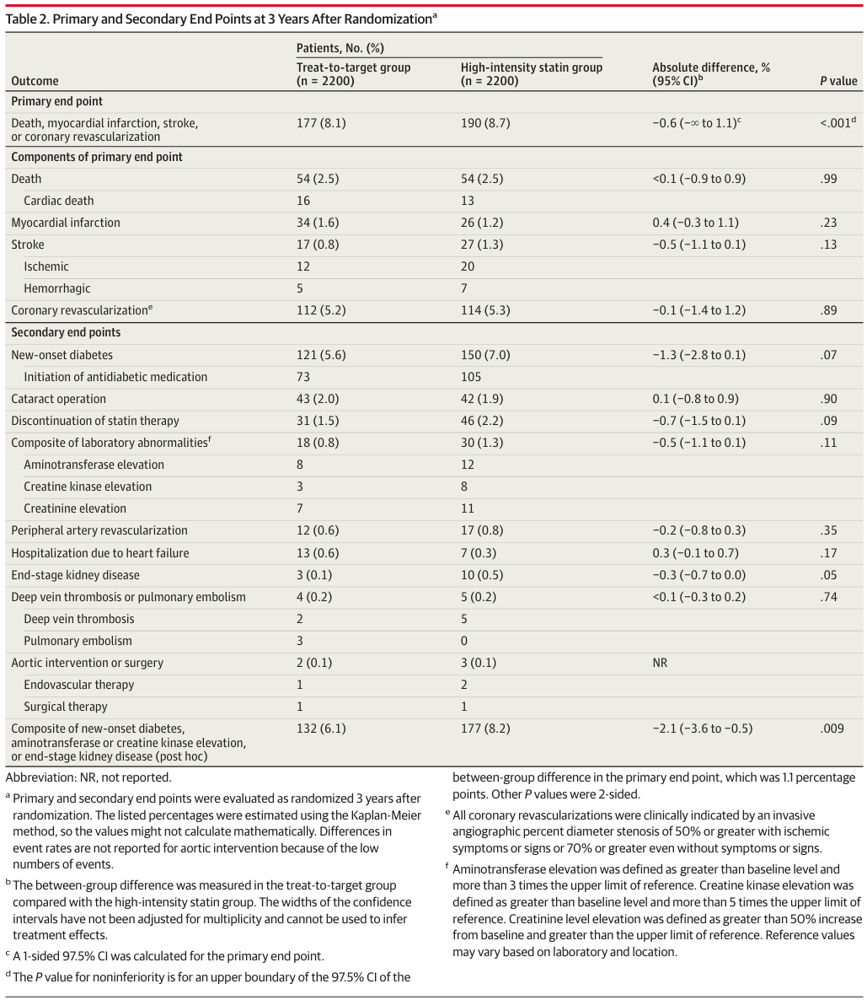

Treat-to-Target or High-Intensity Statin in Patients With CAD
Dohoon Baek
CAD(관상동맥질환)
관상동맥 혈관이 좁아지거나 막혀 심장 근육에 혈액 공급 문제가 발생하는 질환
LDL 콜레스테롤 농도
를 낮추기 위하여
statin
을 복용
Lowering LDL Cholesterol Levels
High-intensity Statin
목표 LDL-C 수치를 명시하지 않고 처음부터
고강도 스타틴
투여
때로는
LDL-C
level
이
최소 50% 감소
하도록 유도
단순하고 관리가 용이하나 고강도 스타틴에 대한 부작용 및 개인별 반응 차이가 존재
Treat-to-target
중강도 스타틴
투여
LDL-C 수치에 따라 용량 조절
개인 맞춤 치료가 가능하나
무작위 임상시험에서의 비교가 부족
Objective
CAD 환자
를 대상으로
treat-to-target이 high-intensity에 비해 비열등
한지 평가
Hypothesis
고강도 스타틴 사용 비율을 줄이면서
임상적 유효성 유지
안전성 측면에서 얻는 잠재적 이점
Design
다기관, 랜덤, open-label, 비열등성 임상시험
12개의 병원에서 진행, 3년 동안 추적
statin 병용 불가 약품 복용, 부작용 고위험군, 기대 여명 3년 이하 제외
Design

Procedures
treat-to-target
군의 경우
LDL-C 수치 50-70 mg/dL
목표
LDL-C>70 용량 상향, 50-70 용량 유지, <50 용량 하양 방식
필요 시 고강도 스타틴 사용
rosuvastatin 10mg 또는 atorvastatin 20mg 복용
Procedures
high-intensity statin
군의 경우
LDL-C 수치와 무관하게 고강도 유지
권장
rosuvastatin 20mg 또는 atorvastatin 40mg 유지
ezetimibe 등의 비스타틴 약물은 혼란 변수 방지를 위해 사용을 권장하지 않음
Randomization
1:1 배정
LDL-C > 100mg/dL 여부, 급성관동맥증화군 여부, 당뇨병 여부 고려
Primary Endpoint
3년 이내에 사망, 심근경색(MI), 뇌졸증, 관상동맥 재혈관화의 발생여부
Secondary Endpoint
대사 및 내분비 이상, 심혈관계 합병증, 혈전색전증, 말초혈관 질환, 대혈관 질환, 신장 기능 약화, 약물 내약성, 기타 장기 합병증, 검사실 이상 복합 지표
모든 2차 평가변수는 사전에 정의하여 open-label임에도 객관성 확보
Follow Up
6주, 3개월, 6개월, 1년, 2년, 3년 후
Statistical Analysis
Sample Size
예상 연간 사건률 4% (3년 누적 12%)
비열등성 마진 3.0%p
총 3686명 필요 (유의수준 2.5% 단측 검정, 검정력 80%, 탈락율 15%)
Sample
랜덤 배정
subgroup analyses (성별, 나이, 체질량지수, 고혈압, 당뇨병, 만성신장질환, 임상양상, LDL-C 수치)
Analysis
primary end point
3년 누적 발생률 (Kaplan-Meier curves)
noninferioirity
(Com-Nougue approach)
단측 95% CI의 상한이
3.0%p
보다 작은지
noninferiority test를 제외하고는 모두 p-value <.05의 양측 검정
Analysis
intention-to-treat
Results
Participants
총
4400명
대상으로 진행 (혼합치료 2200명, 단독치료 2200명)
Participants
Participants
74% 의 참가자들은 초기 진단 후 1년 이상 지남
high-intensity statin 25%, moderate-intensity statin 57%
4341명 (98.7%) 3년 완료 (누적 완료 연 수 6449 (treat-to-target), 6461(high-intensity) )
Participants
스테틴 강도의 경우 378명(17%) 증가, 208명(9%) 감소, 1614명(73%) 유지
high-intensity statin 비율 (1년 53%:93%, 2년 55%:91%, 3년 56%:89%)
ezetimible은 treat-to-target 군에서 더 많이 사용됨
Particpants

Analysis
6주차의 경우 treat-to-target 군에서 LDL-C 수치가 높음 (69.6[21.2]mg/dL vs 66.8[21.8]mg/dL, P<.001)
연구 기간 동안 두 군은 큰 차이를 보이지 않음 (69.1[17.8]mg/dL vs 68.4[20.1]mg/dL,P=.21)
Analysis(treat-to-target)
LDL-C below 70mg/dL
55.7%
,
59.2%
, 57.7%, 55.7%, 60.8%, 58.2%
6주와 3개월에서 high-intensity statin 군에 비해 낮은 수치를 보임
Analysis(treat-to-target)

Primary Endpoint
treat-to-target 177명 (8.1%), high-intensity 190명 (8.7%)
absolute difference, -0.6%p
upper boundary of the 1-sided 97.5% CI, 1.1%p,
P<.001
Secondary Endpoint
두 군 사이 통계적으로
유의미한 차이는 없음
사망 (2.5% vs 2.5%; absolute difference,<0.1% [95%CI,−0.9%to0.9%]; P = .99)
심근경색 (1.6% vs 1.2%; absolute difference,0.4% [95%CI,−0.3%to1.1%]; P =.23)
뇌졸증 (0.8% vs 1.3%; absolute difference,−0.5% [95%CI,−1.1%to0.1%]; P = .13)
Secondary Endpoint
사후 검정 결과 몇몇 항목에서 유의미하게 낮은 수치를 보임
당뇨병 발생 및 간, 근육, 콩팥 독성의 합 (6.1%vs8.2%; absolutediffer ence, −2.1% [95%CI−3.6%to−0.5%]; P = .009)
Endpoints

Discussion
같은 용량의 스테틴이 투입되더라도
개인마다 LDL-C 감소폭이 다름
treat-to-target 방법은 과도한 스테틴 복용을 방지할 수 있고
안전성이 높음
Discussion
LDL-C의 목표치 설정시 본 연구에서는
70mg/dL 이하
를 설정하였지만 최근 유럽에서는
55mg/dL 이하
권고
LDL-C 목표치 도달률은 2년 시점을 제외하고는
treat-to-target 군에서 낮게 나타남
목표치 도달을 위해서는
스테틴의 초기 강도
역시 LDL-C 수치를 고려해야 할 가능성 존재
Limits
Openlabel(의사가 용법을 알고 치료를 진행)
Primary endpoint 누적발생률이 예상발생률보다 낮아 설명과 비교에 어려움 존재
Limits
관찰 기간이 부족했을 수도 있다
LDL-C 수치 목표 달성률이 낮아 치료의 적절성에 대한 의심
CAD 환자만을 대상으로 연구하였기에 추가적인 연구가 필요